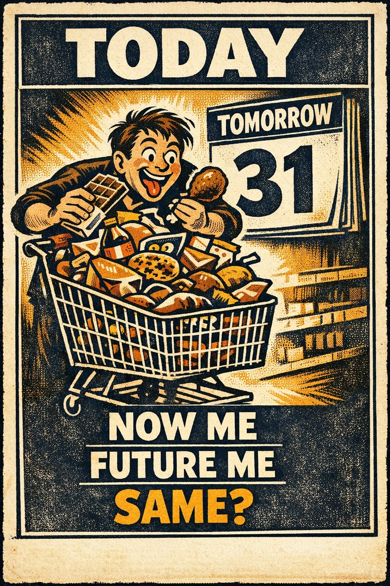

Common in live judgment
80
Strong in health, finance, entrepreneurship, and personal planning.
Rare
Frequent

Cognitive Biases
A practical cognitive-bias site with clear definitions, learning paths, assessments, self-audits, and debiasing tools.
Cognitive Bias
The tendency to overestimate favorable outcomes and underestimate the probability or impact of unfavorable ones, especially for oneself or one's own plans.
What it distorts
It bends forecasting, preparedness, budgeting, and personal risk judgment by turning hope into hidden evidence.
Typical trigger
Personal planning, entrepreneurial projects, health risks, investing, and situations where hope itself has motivational value.
First countermove
Force one concrete downside scenario into the forecast before locking in the optimistic range.
Best use
Structured process
What downside am I treating as less likely for me or for us than the base rates justify?
Self-protective imagination, selective scenario generation, and emotionally attractive future stories make positive outcomes feel more natural than the full distribution supports.
These are classroom-facing editorial estimates for comparing how the bias behaves in use. They are teaching aids, not measured statistics.
Common in live judgment
80
Strong in health, finance, entrepreneurship, and personal planning.
Easy to spot from outside
45
Easier to notice once reference classes and comparable miss rates are shown.
Easy to innocently commit
86
Preferred futures feel strangely normal from inside.
Teaching difficulty
38
Clear once personal forecasts are compared against outside-view data.
This comparison makes the hidden pull easier to see before the technical label has to do all the work.
Biased move
This is like assuming your umbrella is less necessary than everyone else's because your own walk feels like it should be one of the lucky ones.
Clearer comparison
Hope can energize action, but it is not a forecasting method. A favorable future does not become more probable just because it feels more livable.
Do not use this label whenever someone is hopeful. Hope is not the problem. The problem is probability inflation in a positive direction that survives weak evidence and poor base-rate support.
Use this label when people systematically underrate their chances of bad outcomes or overrate their chances of good ones compared with relevant comparators.
Use the quick check, caveat, and nearby confusions together. The fastest diagnosis is often the noisiest one.
Each example changes the surface context while keeping the same hidden distortion in place.
Someone assumes the future will include the benefits of the plan without much of the friction, delay, or loss that usually accompanies similar efforts.
A team imagines adoption, growth, or launch success in concrete terms while keeping the failure modes abstract and socially awkward to discuss.
People underweight disaster, maintenance, or downside planning because dwelling on them feels overly negative or unproductive.
The good outcome feels not only preferable but also more normal, more likely, and more representative of what will probably happen.
Teaching note: This page gives the site a more human complement to overconfidence: not just certainty, but certainty biased in a direction the mind wants.
The strongest debiasing moves change the process, not just the label.
Write a probability range that includes one realistic bad outcome you would rather not think about.
Assign someone to own the downside scenarios explicitly rather than treating them as mood-killing objections.
Use historical base rates and postmortem records to counter purely aspirational forecasting.
Practice And Repair
Optimism bias is not mere cheerfulness. It is a skew in expectation that makes favorable outcomes feel more representative of what will happen than the evidence deserves.
A forecast touches goals, identity, or emotionally attractive possibilities.
The positive outcome feels not only desirable but somehow more natural or more likely for this case.
Downside scenarios and base rates get underweighted, making preparation and calibration weaker than they should be.
Use an outside-view range drawn from similar cases before allowing the inside story to move the forecast upward.
What would my forecast be if I had to anchor it to the historical rate before telling myself why this case is special?
Spot It
Slow It
Reframe It
These are nearby labels that can share the same outer appearance while differing in what actually drives the distortion. Use the overlap, the distinction, and the diagnostic question together before settling the call.
Why compare it: Overconfidence is excessive certainty in general; optimism bias specifically leans the forecast toward favorable outcomes.
Why compare it: Planning fallacy is one practical expression of optimism bias in schedules, budgets, and project estimates.
Why compare it: Neglect of probability underweights the numbers altogether; optimism bias selectively tilts the forecast toward the pleasant side.
These are useful when the label seems roughly right but the process change still feels underspecified.
Which undesirable outcome am I least motivated to model in detail?
Would I assign the same probability if this were someone else's project rather than mine?
How much of this forecast is evidence and how much is hopeful identification with the result?
These sourced cases do not prove what was in someone's head with perfect certainty. They are teaching cases for showing where the bias pressure becomes visible in practice.
Comparative-risk optimism studies
People often rate themselves as less likely than comparable others to experience negative events and more likely to experience positive ones.
Why it fits: The desirable future becomes overrepresented in personal expectation relative to relevant comparators.
Modern psychology research
Smokers, drivers, and founders rate their own downside as unusually low
Comparative-risk studies find that people often think their own odds of common negative outcomes are better than those of similar peers, even when base rates give little reason for the gap.
Why it fits: Personal futures are being forecast with unusually generous weighting.
Modern psychology research
These linked tools turn the page into practice instead of leaving it at the level of definition.
This bias does not yet have a dedicated path, but these nearby paths are usually the clearest place to see the same family of distortion in motion.
Same path family · Decision under uncertainty
Use this path before a major project, strategy choice, or resource commitment.
Nearby path
Use this path when someone sounds sure, fluent, or experienced and you need to know whether the underlying understanding is actually there.
This bias does not yet have its own dedicated self-check, but these nearby audits usually catch the same kind of drift before it hardens.
Same audit family · Decision under uncertainty
What would the outside view say before the inside story takes over?
Same audit family · Decision under uncertainty
What did the surprise reveal about the world, and what did it reveal about my forecasting habits?
There is no dedicated scenario for this bias yet, but these nearby cases test the same kind of pressure and repair move.
Same scenario family · Decision under uncertainty
The brave launch date
A team estimates a new feature can ship in three weeks because the current task list looks manageable, even though the last four comparable projects all ran for at least seven wee…
Same scenario family · Decision under uncertainty
The range is too neat
A forecaster says she is 95 percent sure quarterly sales will land between two numbers that are only a few percentage points apart, even though the market is highly unstable and s…
These links widen the frame around the bias without interrupting the core lesson on this page.
A theory article on how ambiguity, vivid possibility, and normal baselines can distort risk judgment before explicit calculation ever gets a fair chance.
CogBias theory
A theory essay on why memorable winners create seductive but incomplete lessons when the failures disappear from view.
CogBias theory
These neighbors were selected from shared categories, shared patterns, and explicit editorial links where available.

The tendency to be more certain about judgments, forecasts, or abilities than the evidence warrants.

The tendency for people to underestimate the time it will take them to complete a given task.

The tendency to ignore or drastically underuse probability information when making decisions under uncertainty.

The tendency to assume that things will keep functioning more or less normally, which leads people to underprepare for unprecedented or fast-moving disruption.

The tendency to overestimate how much your future preferences, values, and reactions will resemble whatever you feel strongly right now.

The tendency for better-informed people to underestimate how hard the issue looks to less-informed people.